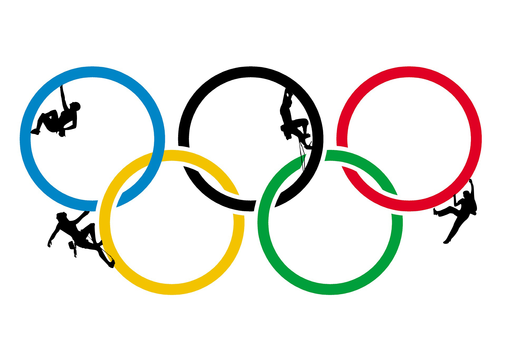

SPORT
Sport - normalna fizichka aktivnost ili veshtina izvedena pod javno prifateni pravila i so cel da rekreira: za natprevaruvanje, za sopstveno uzhivanje, za uzhivanje, za usovrshuvanje, za razvivanje na veshtina, ili za kombinacija od navedenite. Ona shto go karakterizira sekoj sport e jasnata cel, kombinirana so vpechatokot za individualna (ili timska) veshtina ili sposobnost. Prvite sportovi kako na primer lov i trchanje nastanale bidejkji bile potrebni da se prezhivee. Za razlika od togash, deneska lugjeto se zanimavaat so sport za zdravje i relaksacija.

OLIMPISKI IGRI
Sekoja chetvrta godina sportisti od celiot svet se sobiraat za da se natprevaruvaat na olimpiskite igri. Postojat letni olimpiski igri i zimski olimpiski igri.
